Festivals in Japan
01. Shogatsu / New Year Festival
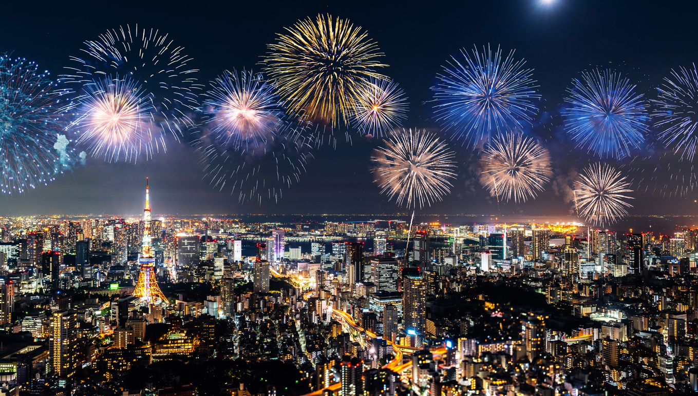Shogatsu, a significant Japanese New Year celebration, falls on January 1, but is extended to days before and after. It involves traditional foods, soba noodles, and prayers for the nation.
02. Setsubun / Bean Throwing Festival

Popularly known as the Bean-Throwing Festival, Setsubun is a Japanese holiday observed on the first day of spring.
03. Hanami / Cherry Blossom Festival
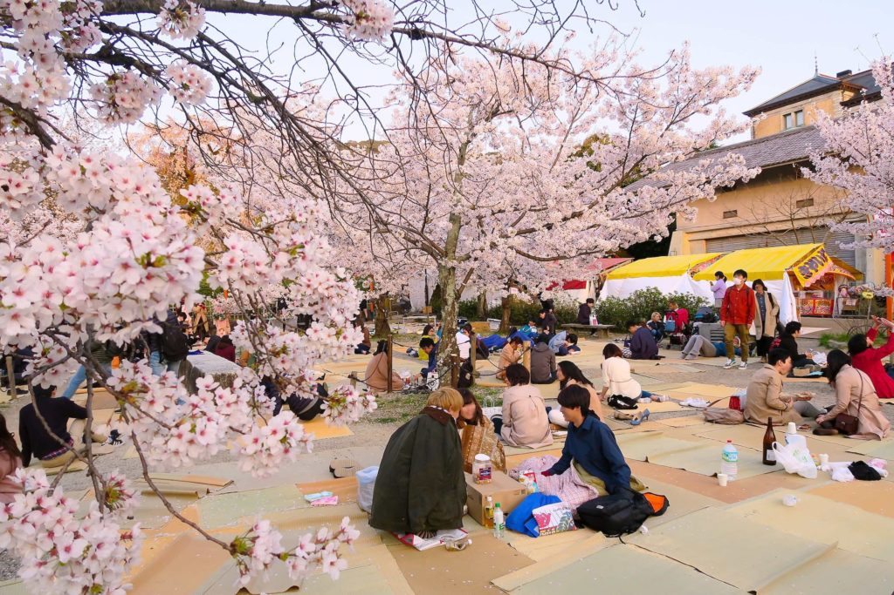Hanami refers to "flower viewing" during the cherry blossom festival. Thousands gather in parks for picnics and parties.
04. Gion Festival
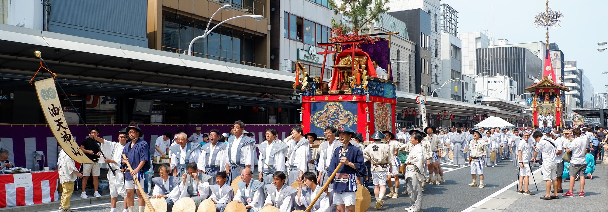Kyoto's Gion Festival takes place over two days in July, featuring a grand parade and traditional attire.
05. Sapporo Snow Festival
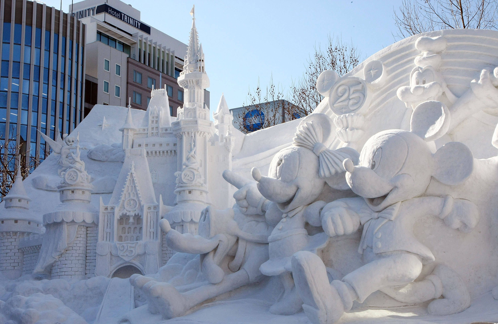The Sapporo Snow Festival is one of Japan's greatest winter festivals, attracting millions of visitors.
06. Aomori Nebuta Festival
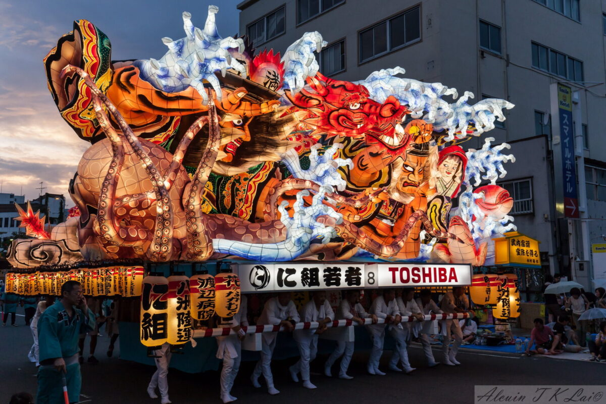The Aomori Nebuta Festival is known for its colorful lantern floats and lively parades.
07. Tenjin Festival
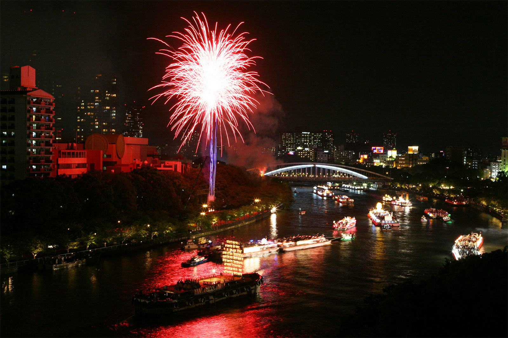Osaka's Tenjin Matsuri features a land and boat procession with music and local cuisine.
08. Kanda Festival
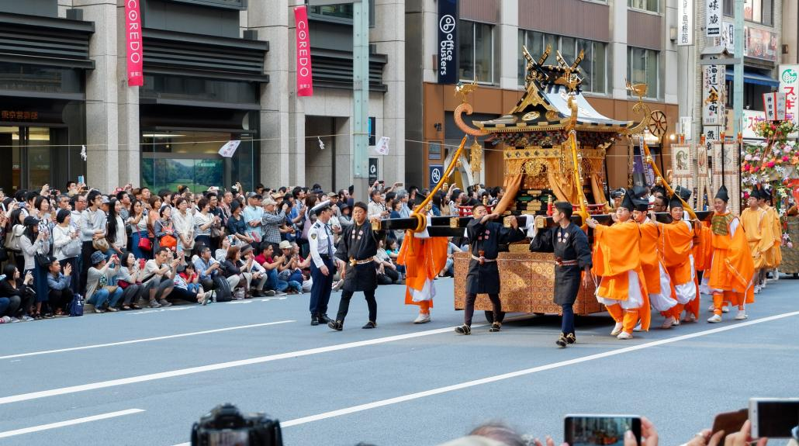Kanda Matsuri is a vibrant Shinto celebration with a colorful procession and food vendors.
09. Nagasaki Lantern Festival
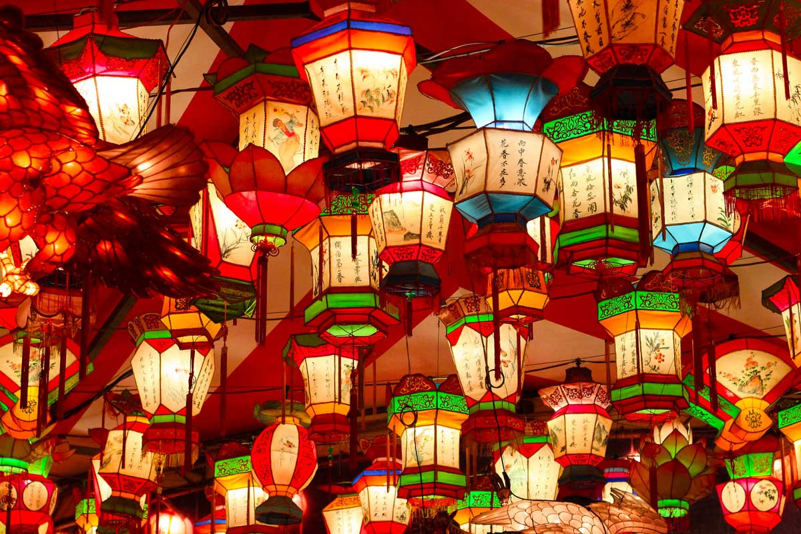The Nagasaki Lantern Festival features thousands of handmade lanterns and cultural performances.
10. Takayama Festival
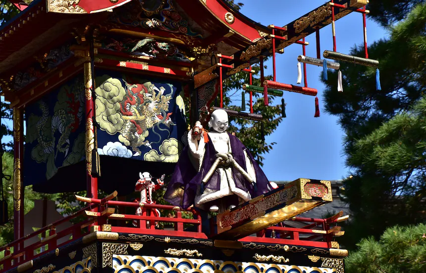Known for its puppet performances and intricately carved floats, Takayama Festival attracts many visitors.
11. Chichibu Night Festival
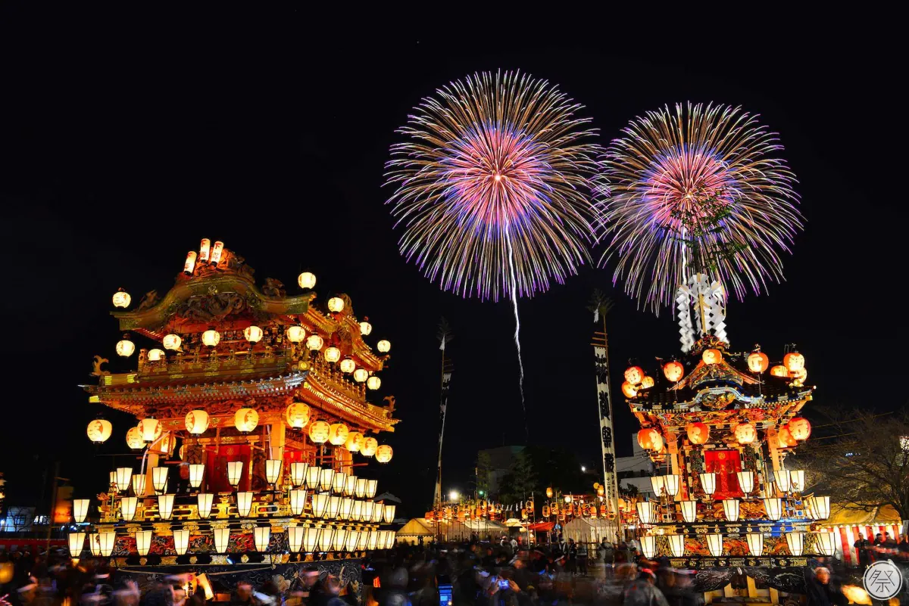Chichibu Night Festival is famous for its spectacular floats and fireworks.
12. Sendai Tanabata Festival
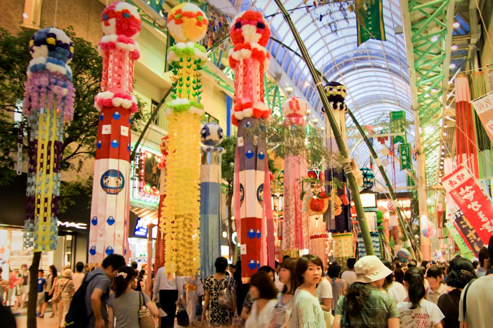The Sendai Tanabata Festival features vibrant decorations and traditional performances.
13. Awa Odori Festival
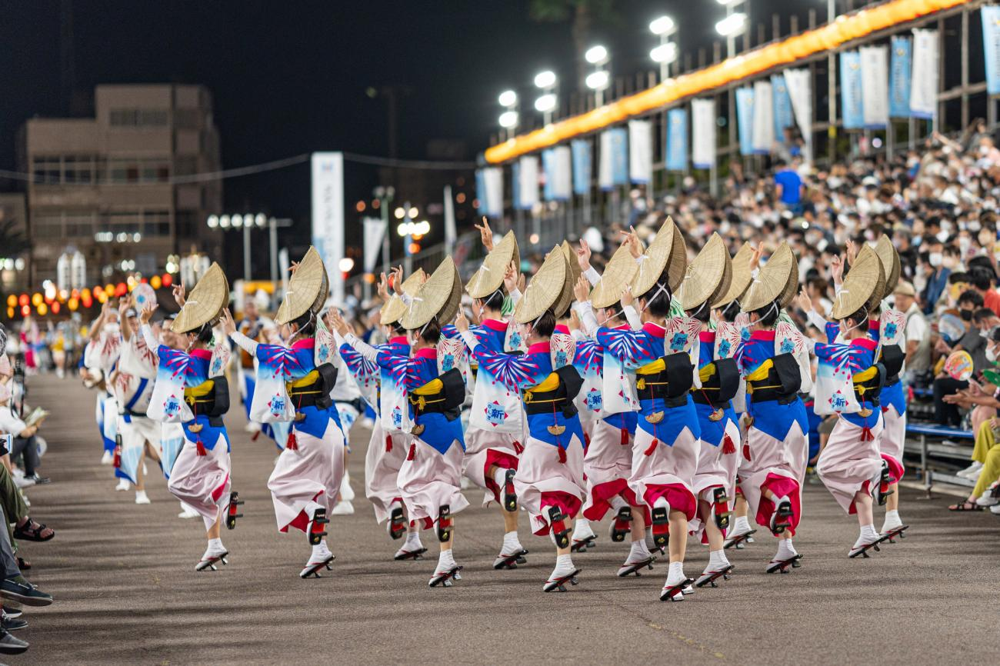The Awa Odori is a lively dance festival with a history of over 400 years.
14. Tokyo Bay Fireworks

Tokyo Bay Fireworks features stunning pyrotechnics lighting up the night sky.